3D Design · Make it real · Diagnose before you reprint
Read a failed print
Where did it start?What do you see?Why?Who fixes it?
A failed print is not trash. It is the most honest feedback a printer can give you. Every curled corner, hairy gap and tangled nest was caused by something, and the plastic recorded it layer by layer. Today you learn to read that record like a doctor reads an X-ray: find where it started, describe what you see, name the most likely cause, and choose the one fix to try first, so the next print works instead of failing the same way.
Hook: the mystery box
Your teacher holds up three failed prints from the class shelf (or uses the three real photos further down). For each one, before anyone guesses a cause, the class answers only two questions out loud:
Where did it go wrong? On the first layer, partway up, or only on one feature?
What exactly do you see? Use describing words: curled, hairy, bulging, shifted, gappy, lumpy, cracked.
Then hold the guesses. Most people jump straight to "the printer is broken." Usually it isn't: about half of the failures in this lesson are fixed by changing the design or a slicer choice that the student owns.
Safety first, every time. A printing nozzle runs at about 200 °C for PLA, and many heated plates get hot enough to burn (the class SKETCH Large plate can reach 110 °C). Never reach into a running printer. Cancel from the screen, let it cool, and tell the teacher. Clogs and anything inside the machine are teacher jobs.
The core idea: four questions, in order
Doctors don't prescribe before they examine. Diagnose a print the same way, and answer the questions in this order, because each one narrows the next.
1
Where did it start?
The height where a failure begins is your best clue. First-layer problems, partway-up problems and feature problems have different causes.
2
What do you see?
Describe before you explain. "The corners curled up 3 mm" is evidence; "bad printer" is not.
3
Why? (most likely cause)
Start with the most common, cheapest cause. A dirty plate is far more likely than a broken motor.
4
Who fixes it?
You change the design, orientation or slicer choice. The teacher calibrates, cleans, unclogs and repairs the machine.
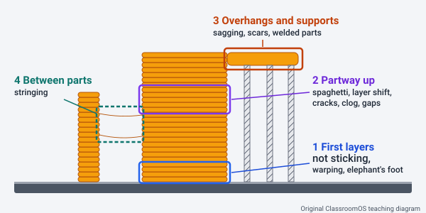
Where did it start? The height of a failure points to its cause. First-layer failures (not sticking, warping, elephant's foot) come from the plate and nozzle height. Partway-up failures (spaghetti, layer shifts, cracks, clogs, gaps) mean something changed during the print. Feature failures (sagging, scars, welded parts, stringing) come from the shape of the model. Original ClassroomOS teaching diagram.
Change one thing at a time. If you add a brim, re-level the plate, swap the spool and rotate the part all at once and the print works, you won't know which change fixed it, and the fix won't transfer to the next print. Pick the fix to try first, reprint a small test, and write down the result.
The failure gallery
Thirteen common FDM failures. Click any picture to enlarge it for the class; the arrow keys step through the set. Each card answers the four questions. Use the filters to sort them by where they start or by who fixes them.
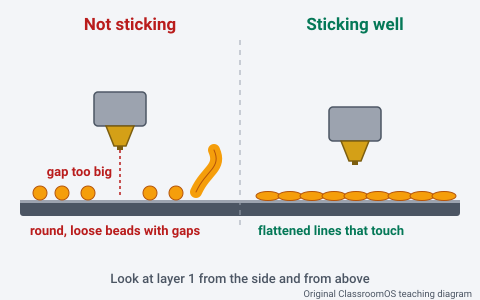
First layer not stickingYou see:The first lines lie as round, loose strands with gaps between them. They slide around or get dragged by the nozzle instead of lying flat.Most likely cause:The nozzle is too far from the plate, or the plate is dirty: skin oil and dust stop plastic from gripping.Try first:Cancel. Wipe the plate, touching only its edges, then recalibrate the nozzle height (the paper test) and watch the first layer of a small test.Who:Teacher or trained operator: a machine fix. Your part is to put the biggest flat face down.Original ClassroomOS teaching diagram
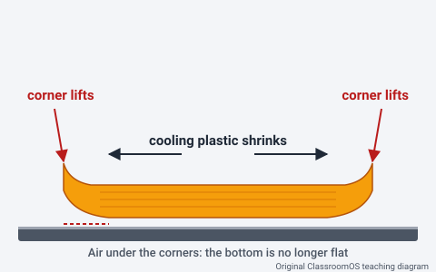
Warping (corner lift)You see:The corners of a long, flat part curl up off the plate. Afterwards the part rocks on a table instead of sitting flat.Most likely cause:Plastic shrinks as it cools. Upper layers pull on the ones below, and sharp corners on long parts concentrate the pull. Drafts and a weak first layer make it worse.Try first:Round the sharp corners in your design and add a brim in the slicer. Keep the door closed and the printer away from fans and open windows.Who:Both. You round the corners and add a brim; if every print warps, the teacher checks plate adhesion and temperature.Original ClassroomOS teaching diagram
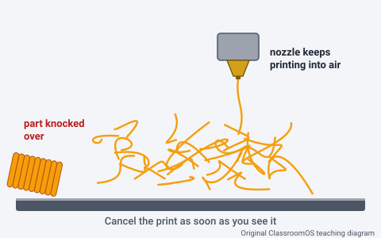
Spaghetti (detached print)You see:A tangled nest of loose filament. The part is missing, knocked over or stuck to the nozzle.Most likely cause:The part broke loose partway through (a weak first layer, a small base under a tall part, or the nozzle hit a curled edge), or a section of the model started in mid-air with nothing under it.Try first:Cancel at once. Read what is left on the plate: if the part tore free, give it a bigger base, a brim or raft and a steadier orientation; if the nest starts at a floating section, add supports or turn the part.Who:Both. You fix the footprint, orientation and supports; the teacher checks adhesion if parts keep coming loose.Original ClassroomOS teaching diagram
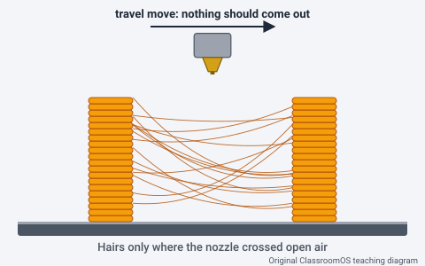
StringingYou see:Fine hairs or cobwebs stretched between separate parts of the print, wherever the nozzle crossed open air.Most likely cause:Molten plastic oozes out of the hot nozzle during travel moves. Damp filament, a nozzle that is too hot, or too little retraction make it worse.Try first:Try a fresh, dry spool. Then the teacher lowers the nozzle temperature in small steps (5 °C at a time) or adjusts retraction, checking with a two-tower test. Snip off the hairs you already have.Who:Teacher: filament storage and printer settings. You clean up the hairs.Original ClassroomOS teaching diagram
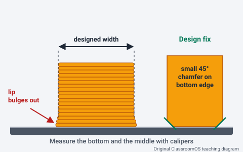
Elephant's footYou see:The bottom few layers bulge out into a lip, so the base measures wider than the rest and won't slide into a hole it should fit.Most likely cause:The first layer is squished on purpose so it sticks, and the lowest layers stay soft on the warm plate while the weight of the part builds on top.Try first:Add a small 45° chamfer (about 0.5 mm) along the bottom edge in your design, or use the slicer's elephant's-foot compensation if the teacher allows it.Who:You: a design change. If it is large on every print, the teacher checks whether the nozzle is set too low.Original ClassroomOS teaching diagram
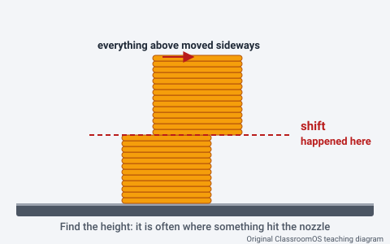
Layer shiftYou see:At one height the whole stack above slid sideways and kept printing in the wrong place, like a step.Most likely cause:The printer lost its place: the nozzle hit a curled edge or blob, the table was bumped, something blocked the moving parts, or a belt slipped.Try first:Find the height of the shift and look for what the nozzle could have hit there. Keep the table clear and unbumped, and reprint.Who:Teacher: if it shifts again on a clean print, the teacher checks belts, rods and anything in the way.Original ClassroomOS teaching diagram
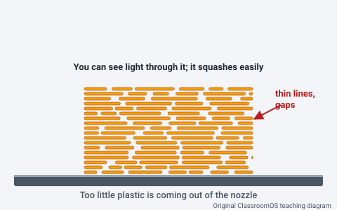
Under-extrusion (gaps)You see:Thin walls, missing or broken lines and holes in the top surface. Light shows through, and the part squashes easily.Most likely cause:Too little plastic is coming out: a tangled or snagged spool, brittle or damp filament, a partly blocked nozzle, or a worn extruder.Try first:Cancel. Check that the spool turns freely and isn't tangled, then reload the filament with a freshly cut tip.Who:Teacher or trained operator. If it happens on every print, the teacher services the extruder.Original ClassroomOS teaching diagram
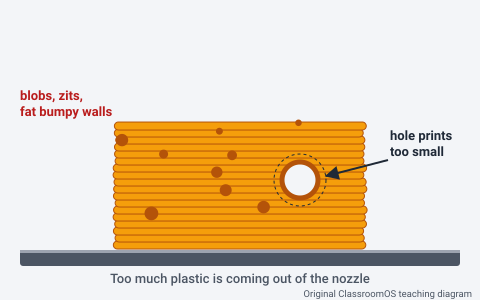
Over-extrusion (blobs)You see:Lumpy, bumpy walls, blobs and zits on the surface, ridged tops, and holes that print too small.Most likely cause:Too much plastic is coming out, often because the wrong material profile was picked in the slicer or the flow is set too high. Small blobs also form at the seam where each layer starts.Try first:Check that the slicer's material profile matches the filament actually loaded (for example PLA vs. Tough), then reslice.Who:Both. You check the profile; if it is right, the teacher checks flow with a calibration cube measured with calipers.Original ClassroomOS teaching diagram
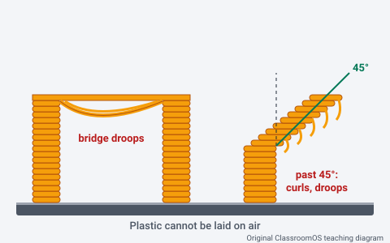
Sagging overhangs and bridgesYou see:The underside of a ledge, arch or bridge droops, curls up or looks stringy.Most likely cause:The model asks for plastic over air: an overhang leaning more than about 45° from vertical, or a long bridge with nothing underneath.Try first:Make the overhang 45° or steeper (a chamfer instead of a flat ledge), turn the part so the ledge points up, split it into pieces, or add supports in the slicer.Who:You: a design or orientation change.Original ClassroomOS teaching diagram
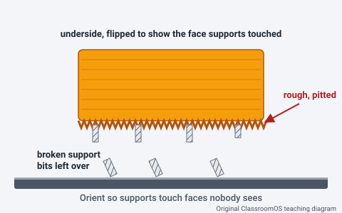
Support scarsYou see:After the supports come off, the faces they touched are rough, pitted or fuzzy, with bits of support left behind.Most likely cause:Supports have to touch the model to hold it up, and every contact leaves a mark. A poor orientation puts those marks on the face people look at.Try first:Orient the part so supports land on hidden faces, design self-supporting shapes (45° chamfers, teardrop holes), or split the model. File or sand the scars, wearing safety glasses.Who:You: a design and orientation change, plus finishing.Original ClassroomOS teaching diagram
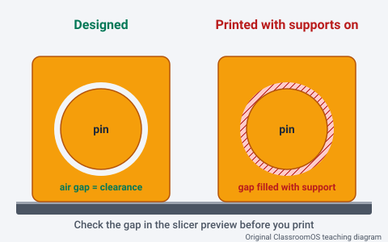
Supports welded to moving partsYou see:A print-in-place hinge, spinner or gear is solid. The gap that should be air is full of support material fused to both parts.Most likely cause:Supports were switched on (or set to "everywhere") and the slicer filled the clearance gap between the moving parts.Try first:Design the mechanism to print with supports off (45° ceilings over moving parts), turn supports off or block them in the gap, and check the gap in the slicer's layer preview before printing.Who:You: a design and slicer change.Original ClassroomOS teaching diagram
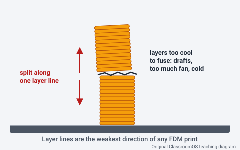
Cracked layers (layer separation)You see:A crack runs along a layer line, or the part snaps cleanly between two layers, often on tall, thin parts.Most likely cause:The layers were too cool to fuse well: a draft, too much cooling fan, a nozzle running too cool, or a tall thin part with little time between layers. Layer lines are always the weakest direction.Try first:Close the printer door and keep drafts away, and orient the part so the force it carries doesn't pull its layers apart.Who:Both. You fix orientation and drafts; the teacher checks temperature and cooling if cracks continue.Original ClassroomOS teaching diagram
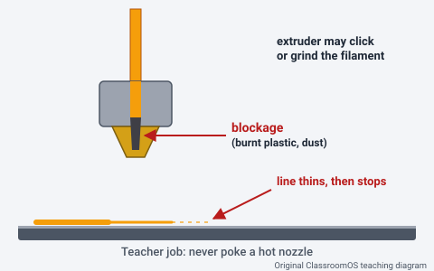
Clogged nozzleYou see:Little or no plastic comes out ("air printing"). Lines get thinner and then stop, and the extruder may click or grind the filament.Most likely cause:Something is blocking the nozzle: burnt plastic, dust carried in on the filament, or a piece of brittle or damp filament jammed in the path.Try first:Cancel and tell the teacher, who follows the printer maker's unclogging steps. Never poke, pull on or touch a hot nozzle.Who:Teacher only: a machine fix.Original ClassroomOS teaching diagram
Count the "who" tags. Eight of these thirteen failures are fixed fully or partly by the student's design, orientation or slicer choice. The other five are machine fixes, but you are usually the one who notices them first and cancels the print. A good designer prevents failures before the printer ever starts. The printer's own operator page (for our class, the SKETCH Large troubleshooting table) has the machine-side steps.
The same failures on real printers
Drawings make a failure easy to see; real prints are messier. Match each photo to a card in the gallery, then decide where it started.
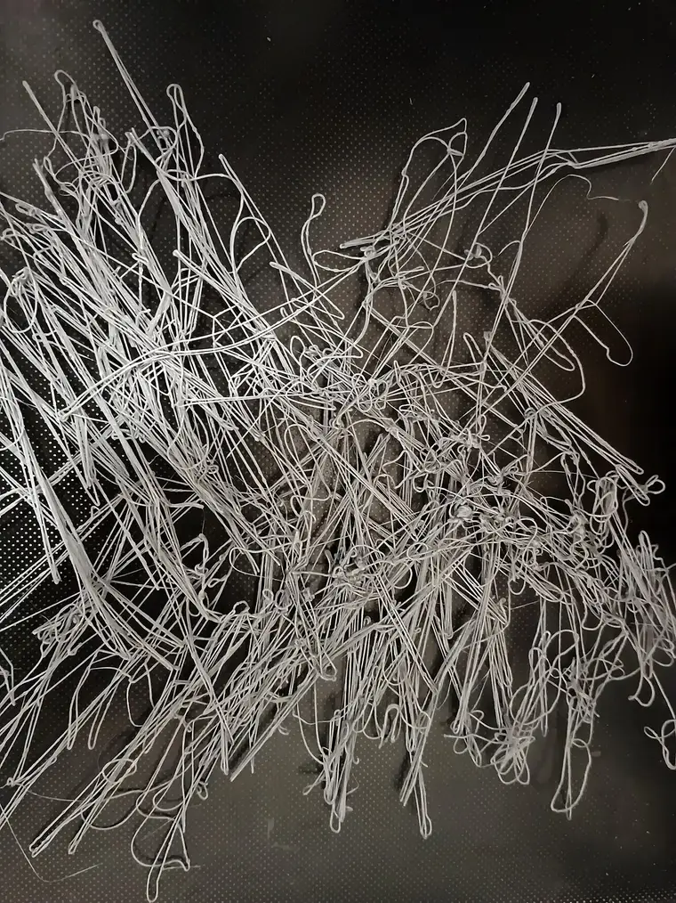
SpaghettiThe uploader reports that this print lost its grip on the plate. With nothing to stand on, every later layer was drawn into the air and fell as loops. Nothing here can be saved, which is why you cancel the moment you see the first loose loop.A7N8X · CC0 1.0 (public domain) · Wikimedia Commons · resized to WebP
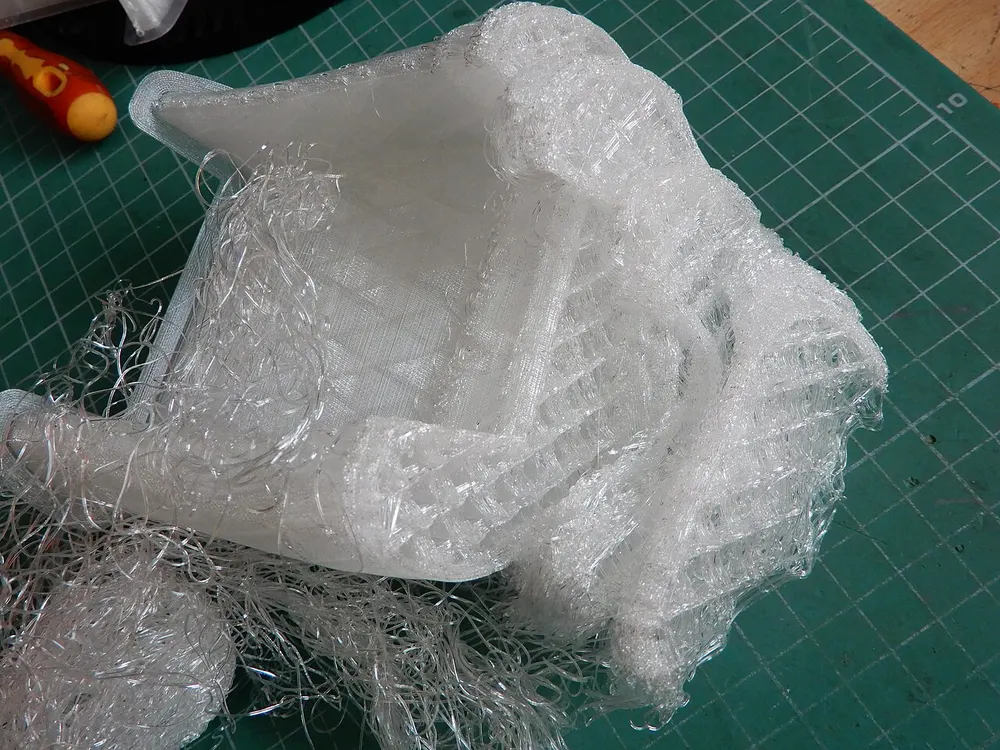
Spaghetti that started partway upThe uploader describes this as a print that came unstuck from the platform during printing. Look at the clean, flat lower walls: the first layers were fine, so read up the part to find the height where the tangles begin.EwkaC · CC BY-SA 4.0 · Wikimedia Commons · resized to WebP
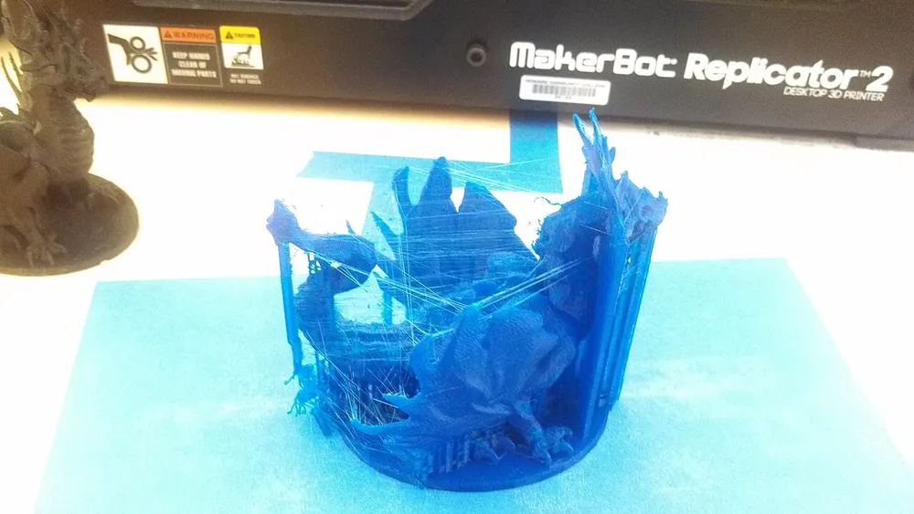
StringingFine strands web across every gap the nozzle crossed. The uploader suspected too little cooling air from a new fan duct, which shows the "most likely cause" is a starting point to test, not a certainty.SuperBlobMonster · CC BY-SA 3.0 · Wikimedia Commons · resized to WebP
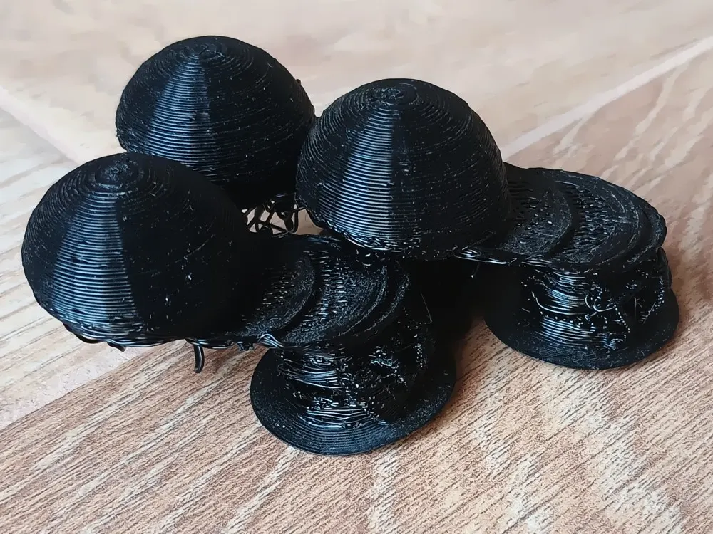
Layer shiftsThe layers of these domes are stepped sideways instead of stacking straight up. The uploader says the shifting came from a motion setting (input shaping), a reminder that the teacher checks machine settings once the simple causes are ruled out.A7N8X · CC BY-SA 4.0 · Wikimedia Commons · resized to WebP
Print Doctor
Two ways to practise. Triage is the flowchart: answer the questions about a real print in your hand and it points you to a diagnosis. Rounds is the quiz: a patient arrives, and you pick the symptom, the cause, the fix and who does it.
The triage flowchart. Start at the top and follow the answer that matches your print.
The Rounds quiz needs JavaScript. Use the triage flowchart and the gallery instead.
Physical task: the class failed-print shelf
Failed prints are the best teaching collection a class can own, so stop throwing them away. Set up one shelf, tray or box labelled Print Hospital.
Admit the patient. Every failed or disappointing print goes on the shelf within a day, with a diagnosis card. Spaghetti counts: bag the nest with its card.
Examine it. Fill in the card: where it started, what you see (sketch it, and measure with calipers or a ruler where it helps), the failure's name, the most likely cause, and the fix you will try first.
Decide who. Tick me if the fix is a design, orientation or slicer change. Tick teacher if it is the machine, and hand the card to the teacher.
Treat it. Change one thing, reprint (a small test piece is fine), and write the result on the card. Put the new print beside the old one.
Grand rounds. Once a week, take five minutes: pick one patient, and a student who didn't make it diagnoses it out loud using the four questions.
Trio Challenge link. Your quarter's Trio Challenge pieces are the prints most likely to land on this shelf. Before you slice each one, check it against the gallery: a part that moves in one piece risks supports welded into its gap; a useful tool that carries force risks cracking along its layers, so orient it with the load across the layers; a likeness has overhangs (chins, noses, ears) that sag or wear support scars on the face. A diagnosis card for a failed trio piece, with the reprint beside it, is good evidence for your portfolio.
Or fill in the card below on screen; it prints with the lesson and Save answers keeps it in this browser.
Checkpoint. Pick any print from the shelf (or a gallery card your teacher points to). In 60 seconds, say out loud: where it started, what you see, the most likely cause, the one fix to try first, and who makes that fix. Your teacher checks off each of the five.
Grade bands: one shelf, four depths
K–2
Sort and name
Sort teacher-held failed prints into piles: sticks / didn't stick, smooth / hairy, straight / crooked. Match each to a gallery picture. Draw what you see on the card; the teacher writes the cause and does the fix.
3–5
Where and what
Use the triage flowchart on a real print. Fill in questions 1 and 2 of the card, with one measurement in millimetres. Name the failure from the gallery and say whether it is a "me" fix or a "teacher" fix.
6–8
Diagnose and redesign
Complete the whole card. For a design failure (elephant's foot, sagging, scars, warping), change the model: a chamfer, a fillet, a new orientation, a split. Reprint and put old and new side by side with a sentence of evidence.
9–12
Run a fair test
Pick one failure and test one variable: print a two-tower stringing test at three temperatures, or an overhang test at 30°, 45°, 60° and 70°. Hold everything else the same, photograph each result, and write a recommendation the class can use.
Practice problems
Use the gallery and the four questions.
Easy1. Six chess pieces printed together have fine cobwebs crossing every gap between them. What is the failure?
Hint: the hairs appear only where the nozzle travelled across open air between parts.
Easy2. The extruder is clicking and nothing comes out of the nozzle. Who fixes it?
Hint: a clog is inside a nozzle at about 200 °C. That is never a student job.
Medium3. A layer shift starts 12.4 mm above the plate. The print used 0.2 mm layers. On which layer did the shift happen?
Hint: 12.4 ÷ 0.2 = 62. Now open the slicer preview at layer 62 and look for what the nozzle could hit there.
Medium4. A peg was designed 20.0 mm wide. With calipers, its middle measures 20.0 mm but its bottom measures 20.6 mm. How far does the elephant's foot stick out on each side?
Hint: the extra 0.6 mm is shared by two sides: 0.6 ÷ 2 = 0.3 mm. A 0.5 mm chamfer on the bottom edge would hide it.
Medium5. A shelf on your model sticks straight out sideways (90° from vertical) with nothing under it. What should you do before printing?
Hint: past about 45° from vertical, each layer hangs over air and sags. That is a design problem with a design fix.
Medium6. A print-in-place hinge came out solid. The slicer's supports were set to "everywhere." What is the first fix to try?
Hint: the slicer filled the clearance gap with support. The machine did exactly what it was told.
Challenge7. For a stringing test, the teacher prints tower 1 at 215 °C and lowers the nozzle 5 °C for each tower after that. The strings disappear on tower 4. What temperature was tower 4?
Hint: tower 4 is three steps after tower 1: 215 − 3 × 5 = 200 °C. Check the layers still bond well at that temperature before using it.
Challenge8. A 150 mm long, flat name sign with sharp square corners lifts at both ends. The plate was clean and the first layer looked good. Which change should you try first?
Hint: the plate and first layer are already ruled out, and sharp corners on long parts concentrate the shrinking pull. Change one design thing, not four things at once.
Vocabulary
FDM
Fused deposition modeling (also called fused filament fabrication): 3D printing by melting plastic filament and laying it down in lines, layer by layer.
First layer
The first lines printed on the plate. Everything else stands on it, so it must be lightly squished and stuck down.
Warping
Corners or ends of a print curling up off the plate as the plastic cools and shrinks.
Brim
A thin, flat ring of extra lines printed around the base of a part to hold its edges down; snapped off afterwards.
Spaghetti
A failed print that has become a tangled nest of loose filament, usually because the part broke free.
Stringing
Thin hairs of plastic left between separate parts of a print where the hot nozzle oozed during a travel move.
Retraction
Pulling the filament back a little before a travel move so less plastic oozes from the nozzle.
Elephant's foot
A bulge around the bottom layers of a print, wider than the designed size.
Layer shift
A print whose layers above a certain height are offset sideways because the printer lost its position.
Under-extrusion
Too little plastic coming out of the nozzle: thin lines, gaps and weak walls.
Over-extrusion
Too much plastic coming out of the nozzle: blobs, lumpy walls and undersized holes.
Overhang
Part of a model that leans out past the layer below it. Past about 45° from vertical it needs support or a redesign.
Bridging
Printing a straight span across open air between two supports.
Support material
Temporary structures the slicer adds under overhangs, removed after printing.
Layer separation
Cracking or splitting along layer lines because the layers did not fuse strongly.
Clog
A blockage inside the nozzle or filament path that stops plastic from flowing.
Where this connects
3D Printing: slicer settings, and the class printer's operator manual and troubleshooting table.
Design a moving fit: print-in-place clearance, the fix for fused moving parts.
Measure and fit: calipers, for measuring elephant's foot and undersized holes.
Joining parts: split a model to avoid overhangs and supports.
Forge and Workbench: both run a print check before you export.
Sources
MakerBot, SKETCH Large user manual and support pages, as summarised in this site's Running the Class Printer section (calibration, troubleshooting, who-may-do-what rules).
Photos: Wikimedia Commons, Category: Failed 3D prints; credits and licences under each photo. Descriptions of each failure's cause in the photo captions are the uploaders' own.